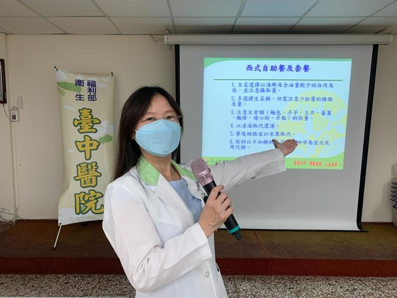
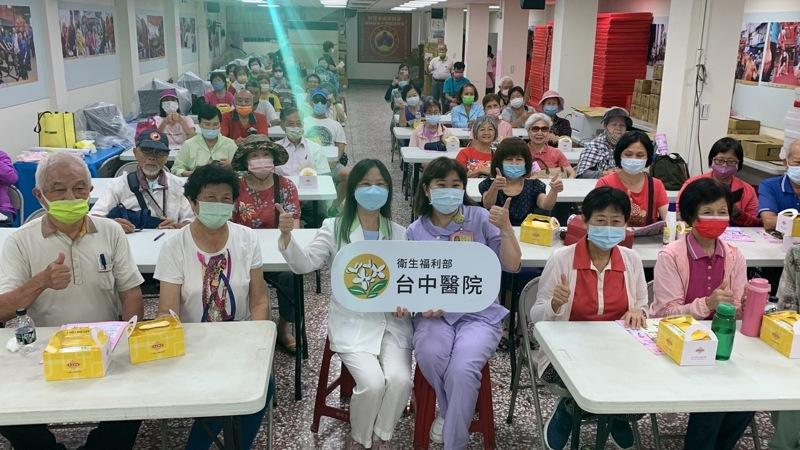

8日就是台湾的父亲节，医师提醒，享用父亲节大餐应注意6大类食物均衡摄取，并选择低油及清淡烹调的食物，尤其是到吃到饱餐厅应控制食量，才能让爸爸度过一个健康无负担的父亲节。
影片来源：联合新闻网
卫生福利部台中医院社区医疗群6日到乐成宫举行「健康吃父亲节大餐、甜蜜不升糖」讲座。营养师陈佳宜说，烹调父亲节大餐，建议以6大类均衡饮食为基础，包括乳品类、全谷杂粮类、蔬菜类、水果类、豆鱼蛋肉类及油脂、坚果种子类，另建议应多采用富含丰富纤维质的食物，如蔬菜类、未精致的全谷杂粮类，帮助消化。
!function(v,t,o){var a=t.createElement("script");a.src="https://ad.vidverto.io/vidverto/js/aries/v1/invocation.js",a.setAttribute("fetchpriority","high");var r=v.top;r.document.head.appendChild(a),v.self!==v.top&&(v.frameElement.style.cssText="width:0px!important;height:0px!important;"),r.aries=r.aries||{},r.aries.v1=r.aries.v1||{commands:};var c=r.aries.v1;c.commands.push((function(){var d=document.getElementById("_vidverto-bc0de73c10937be205a8d57fd75a9690");d.setAttribute("id",(d.getAttribute("id")+(new Date()).getTime()));var t=v.frameElement||d;c.mount("10171",t,{width:720,height:405})}))}(window,document);
她说，6大类食物中蛋白质来源，建议以油脂成分较低的黄豆类制品、鱼类、白肉或海鲜等为优先选择。每餐摄取量则约一掌心的豆鱼蛋肉类，搭配每餐至少要有3份蔬菜、两份水果，才能均衡饮食。
烹调方式尽量避免油炸、油煎，改采用清蒸、水煮、凉拌、烧、烤、炖、卤等方式减少烹调用油的使用量。油品则建议选择大豆沙拉油或葵花油等植物油烹调，不要选择动物性油脂增加心血管负担。
若选择吃到饱餐厅，陈佳宜认为最重要的就是要控制摄取量，比如选择海产或鱼类等油脂成分低的主食，或小份量的牛排或鸡肉。常见的味噌汤料理钠含量比较高，高血压的父亲要适可而止。蔬菜类可以选择生菜沙拉佐以和风酱，取代热量高的千岛酱，甜点如布丁或蛋糕尽量以新鲜水果取代，降低糖份的摄取，也可助消化。
至于餐后的水果，陈佳宜建议以新鲜水果取代鲜果汁，并建议有糖尿病或高血脂的爸爸们蛋糕与甜点摄取量应适可而止，饭后饮料则尽量选择无糖绿茶或黑咖啡，才能享受一个吃的开心、健康无负担父亲节。

卫生福利部台中医院营养师陈佳宜说，烹调父亲节大餐，建议以6大类均衡饮食为基础。（台中医院提供）
8日就是台湾的父亲节，医师提醒，享用父亲节大餐应注意6大类食物均衡摄取，并选择低油及清淡烹调的食物，尤其是到吃到饱餐厅应控制食量，才能让爸爸度过一个健康无负担的父亲节。
影片来源：联合新闻网
卫生福利部台中医院社区医疗群6日到乐成宫举行「健康吃父亲节大餐、甜蜜不升糖」讲座。营养师陈佳宜说，烹调父亲节大餐，建议以6大类均衡饮食为基础，包括乳品类、全谷杂粮类、蔬菜类、水果类、豆鱼蛋肉类及油脂、坚果种子类，另建议应多采用富含丰富纤维质的食物，如蔬菜类、未精致的全谷杂粮类，帮助消化。
她说，6大类食物中蛋白质来源，建议以油脂成分较低的黄豆类制品、鱼类、白肉或海鲜等为优先选择。每餐摄取量则约一掌心的豆鱼蛋肉类，搭配每餐至少要有3份蔬菜、两份水果，才能均衡饮食。
烹调方式尽量避免油炸、油煎，改采用清蒸、水煮、凉拌、烧、烤、炖、卤等方式减少烹调用油的使用量。油品则建议选择大豆沙拉油或葵花油等植物油烹调，不要选择动物性油脂增加心血管负担。
若选择吃到饱餐厅，陈佳宜认为最重要的就是要控制摄取量，比如选择海产或鱼类等油脂成分低的主食，或小份量的牛排或鸡肉。常见的味噌汤料理钠含量比较高，高血压的父亲要适可而止。蔬菜类可以选择生菜沙拉佐以和风酱，取代热量高的千岛酱，甜点如布丁或蛋糕尽量以新鲜水果取代，降低糖份的摄取，也可助消化。
至于餐后的水果，陈佳宜建议以新鲜水果取代鲜果汁，并建议有糖尿病或高血脂的爸爸们蛋糕与甜点摄取量应适可而止，饭后饮料则尽量选择无糖绿茶或黑咖啡，才能享受一个吃的开心、健康无负担父亲节。

卫生福利部台中医院社区医疗群6日到乐成宫举行「健康吃父亲节大餐、甜蜜不升糖」讲座。（台中医院提供）